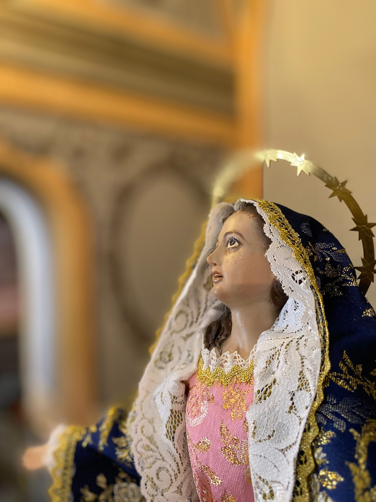
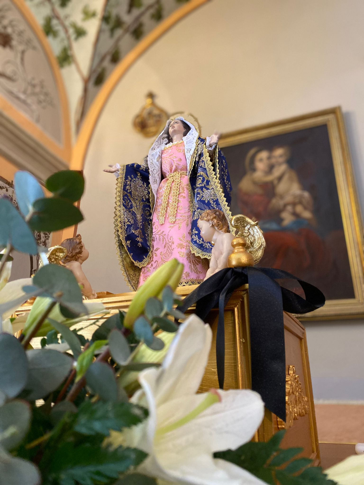
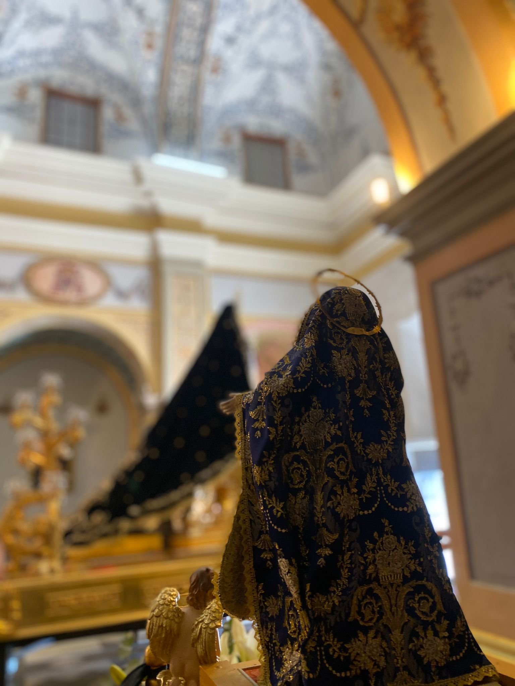
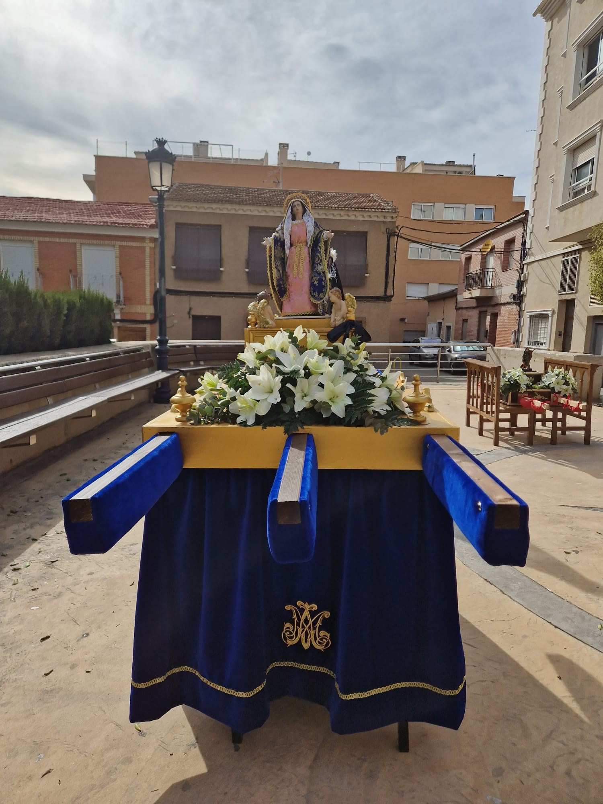

La Virgen de la Misericordia es una réplica en miniatura de la virgen que desfila en Martes Santo y fue realizada en el año 2018.
El trono fue realizado en el año 2023 por Eladio Gomez Hellín para la primera salida infantil que se realizó en la Semana Santa de La Ñora.
Fue bendecida en el año 2023 por Francisco Sánchez Rodríguez en la Misa de Imposición de Insignias de la Virgen del Paso que se realiza el cuarto sábado de cuaresma. Puede ser portada por 16 niños.
   